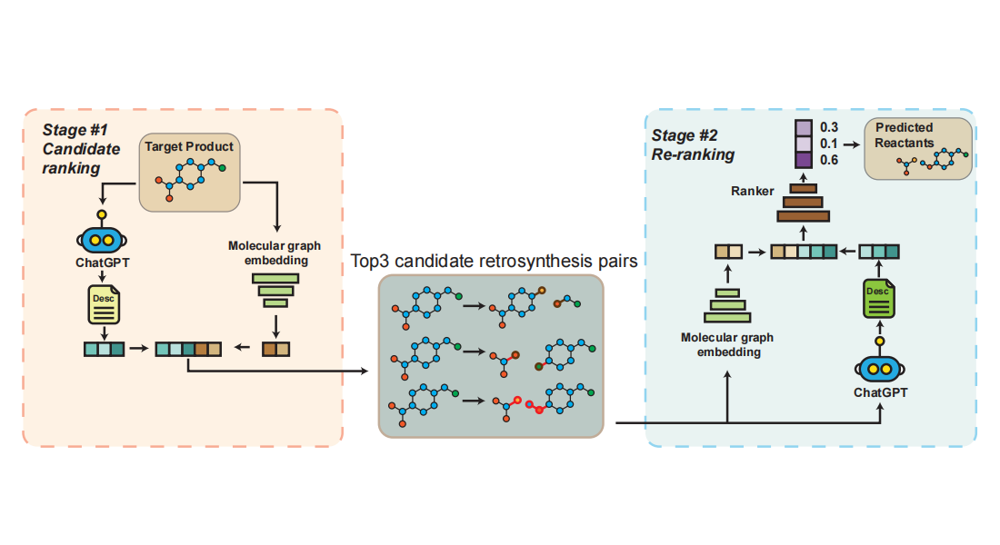

MARS
MARS
MARS (Make vAriance Reduction Shine)是一个统一的优化框架，旨在解决训练大型模型的固有挑战。
传统的自适应梯度方法，如Adam和AdamW，经常遭受高随机梯度方差的困扰，而方差缩减技术在深度学习中难以获得实际影响。
MARS的核心由两个主要部分组成：（1）一个缩放的随机递归动量，它提供了一个方差减小的全梯度估计器，以获得更好的梯度复杂性；以及（2）预处理更新，它近似于二阶牛顿法，以获得更好的每次迭代复杂度。
通过将预处理梯度方法与方差缩减相结合，MARS实现了两全其美，加速了优化中关键点的搜索。
MARS (Make vAriance Reduction Shine) is a unified optimization framework designed to address the inherent challenges of training large models.
Traditional adaptive gradient methods like Adam and AdamW often suffer from high stochastic gradient variance, while variance reduction techniques have struggled to gain practical impact in deep learning.
At its core, MARS comprises two major components: (1) a scaled stochastic recursive momentum, which provides a variance-reduced estimator of the full gradient for better gradient complexity; and (2) the preconditioned update, which approximates the second-order Newton's method for better per-iteration complexity.
By combining preconditioned gradient methods with variance reduction, MARS achieves the best of both worlds, accelerating the search for critical points in optimization.
